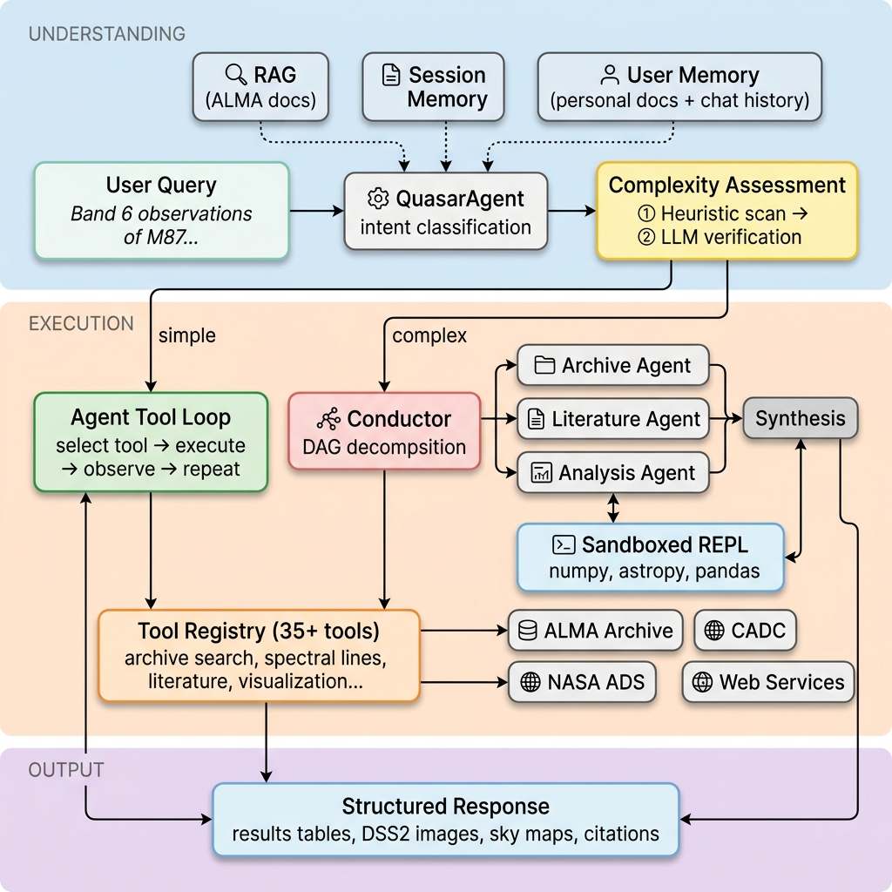
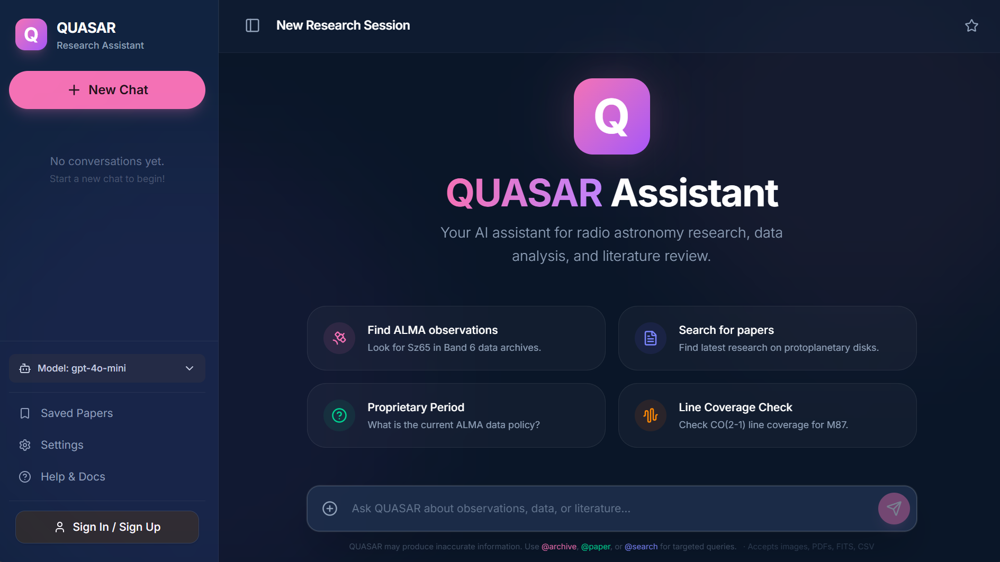

The ALMA Science Archive contains petabytes of data spanning a decade of observations. Despite rich programmatic interfaces, translating a research question into the right combination of archive queries, metadata filters, and analysis steps requires substantial domain knowledge in radio interferometry — a significant barrier for students and interdisciplinary researchers.
A general-purpose LLM becomes a capable scientific assistant not through model fine-tuning alone, but in combination with careful domain engineering.


Quasar synthesizes domain-specific tool use with robust task planning to make astronomical data retrieval and analysis accessible through natural language.
- Multi-LLM consensus protocols for the Conductor to reduce single-point-of-failure risk
- Open-weight LLM migration for local deployment without proprietary dependencies
- Quantitative benchmarks with structured evaluation suite
- Multi-wavelength expansion to NRAO, MAST, NOIRLab, and Astro Data Lab archives